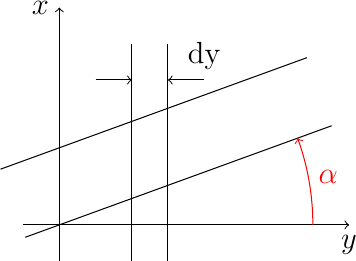

Read time: 7.0 minutes (702 words)
Glue Joints¶
We use glue (sparingly) to join parts together. We need to keep weight down, so we only want to use as much glue as necessary to hold the parts in place throughout a flight. Too much glue adds weight, too little means the plane may come apart. So, we are very interested in making the right choices when we pick our adhesives.
One of my design goals was to be able to assess how much glue I needed in my design. OpenSCAD can hep with this.
Part Placement¶
Much of the design work involves determining proper placement of parts. For example, we want the ribs in our wing to line up exactly with the leading and trailing edges spars. We also want those joints to be “tight”, meaning the front of the rib lines up exactly with the spar.
If we have done our job properly in laying these parts out, the joint will be exact, We could fuse these two parts together using a union operation, but that is not really helpful for our purposes. What we want to do is “glue” these to parts together.
Note
For some reason, I often wake up in the middle of the night with a really good idea in my head. My students usually heard all about it during the next class!
Here is an idea! If we take the rib and slide it slightly into the spar, then use the intersection operation, we will be left with a tiny new “part” that represents our glue joint! That shape is a pretty good representation of the glue we will be placing there. But what will that joint weigh?
Note
Exact data on the weight of the glue is hard to come by. Most builders know that super glue is heavier than traditional model glues like Ambroid or Duco.
The data I am presenting here is based on my first build of this design. I constructed two versions of the stabilizer and used thinned Duco on one and Gorilla Super Glue on the other. In bot cases, I weighed the parts before gluing, and again after the frames had been assembled. Here is what I came up with:
Todo
Load data table here.
The volume of this tiny intersection is an approximation of the glue we will place there. Of course if you tend to over glue, the actual volume of the glue you place there may be bigger. That issue is a topic for a later study. For now we will use this idea to estimate the size of the blob of glue we should use to join these two parts.
Part Trimming¶
Once I started working with this idea, I ran into an issue with my design. If I use tapered spars for the wing, the rib joints are not exactly lined up unless I trim the rib so the joint is perfect. Fortunately, I can figure out this tiny angle using a bit of trigonometry and a simple math function available in your OpenSCAD code:
angle = atan2(dy,dx)
Where dy is the thickness of the rib and dy is the size of the gap. We use this function to calculate the trim angle when we build a tapered spar as well.
In order to maintain the design chord of a wing, we actually need to cut the ribs shorter to account for the leading and trailing edge spar thickness. Here is an exaggerated diagram showing what we actualy need to do to properly trim the joint:

Spar-Rib joint detail
The usual way to position the rib would be to station the leading edge of the rib at at a point along the spar, adjusting by the spar thickness. This would be completely wrong if we want things to be accurate. The thickness of the spar, accounting for the spar angle needs to be determined, and the rib needs to be slightly longer to eliminate the gap on one side. Thank goodness OpenSCAD can do the math to figure all of this out! All we need are some equations to add to our code.
This issue only came up when I decided to taper the spars in my design. That meant the rib joints were all off by a smidgen, and I needed to add the code developed in thi section. That code will work well any time toy decide you want an angled joint in your design, like when you use elliptic outlines. I kept my design simple in concept, but it did not stay that way as it evolved.